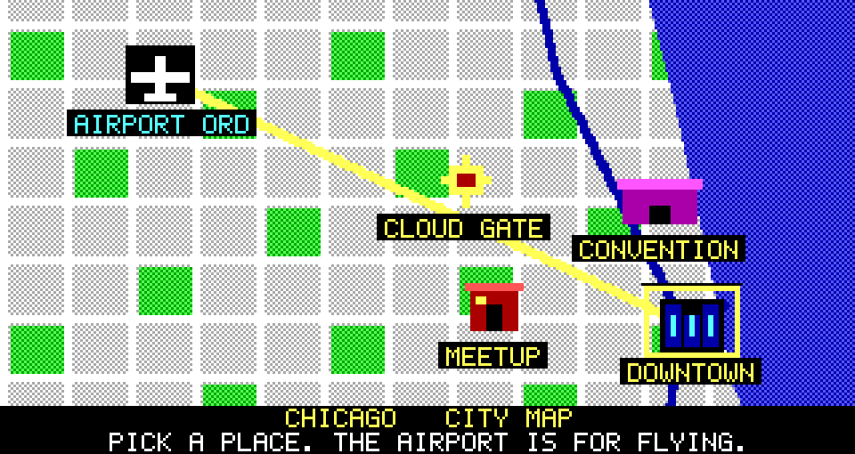
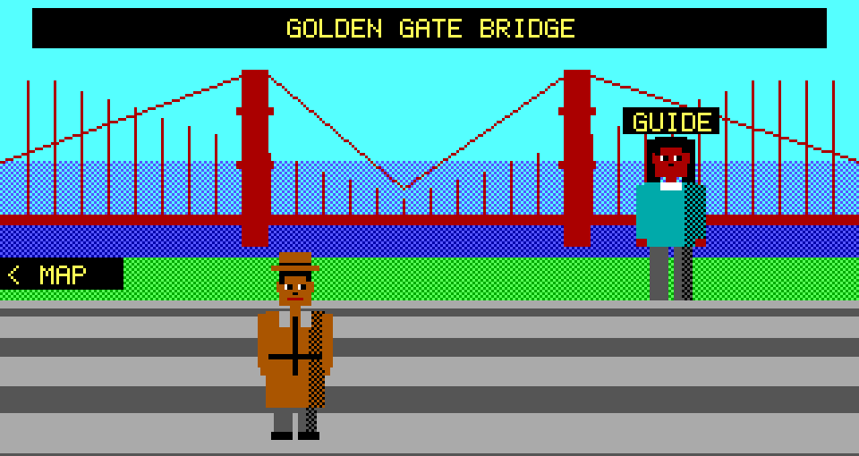
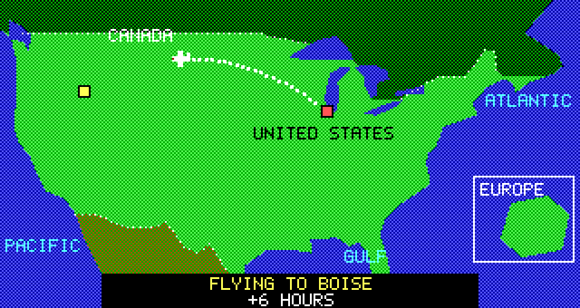
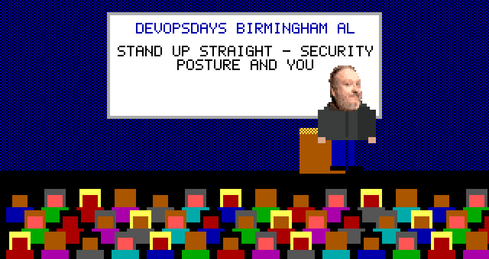

Case 1 · 10 stops
Early 2023 to May 2023
Boise, Oakland, Seattle, Towson and 6 more
A conference-trail trivia adventure
You want Dwayne McDaniel on your podcast. He's too busy: 121 events since 2023, and he's never home. He'll do the show if you get him a new headshot. Chase him city by city, and every case you crack earns a piece of it.
▶ Click here to playFree. Runs in your browser, on desktop or phone. Play the 12 cases in any order. The blue bar always tells you what to do next.

A detective trivia game in the spirit of the 1980s geography classics, built on a real trail: every stop is an in-person event from Dwayne's conference history, from early 2023 to his next talk, in order.
Each case starts in Chicago, where you just missed him. You explore the city, collect fun facts about where he flew next, pick the right flight, and pass a geography quiz to get a badge at the event. When you catch him, he hands you that event's Challenge Coin, promises he'll do your show next stop, and leaves early. Again.
The trail is real; the rest is a game. Events, dates, cities, talk titles and airports are real. The witnesses, the excuses and the podcast are made up, and the city maps are rough sketches built from real coordinates.


Click a place on the city map, or pick a verb and click something in the scene. You can also type: talk guide, quiz, go airport, fly denver, register.

FOUND HIM · DEVOPSDAYS
“Hey, you found me! Here, take a coin. Your podcast? I'd love to, but a honeytoken just fired and I need to see who tripped it. Next stop, I promise.”
Before you can pin down a date, he's out the door. Thirty excuses, all things that really happen at conferences.
121 stops in 50 cities, split into 12 cases. Solve them in any order; each one is a piece of the headshot.
Boise, Oakland, Seattle, Towson and 6 more
Myrtle Beach, Indianapolis, Arlington, Richmond and 6 more
Cincinnati, Santa Clara, Atlanta, Pocono Manor and 5 more
Halifax, Kennedy Space Center, Chicago, San Francisco and 5 more
Las Vegas, Bethesda, Birmingham, Chicago and 5 more
Charleston, Vancouver, Chattanooga, Austin and 4 more
St. Louis, Halifax, Seattle, San Francisco and 3 more
San Francisco, Las Vegas, Chicago, Paris and 3 more
Montreal, Austin, San Diego, Chicago and 3 more
San Francisco, Milwaukee, Halifax, Denver and 3 more
New York, San Antonio, Las Vegas, Washington and 2 more
Cleveland, Davenport, Lone Tree, New York and 6 more
Nothing is stored in your browser. Open the Menu and pick Save code to get a code like WD-XXXX-XXXX-XXXX-XXXX, then enter it on the title screen to pick up where you left off, on any device. It holds your solved pieces and your exact spot in the case you're playing.
Each code below is a clean run with that many cases solved, in order. The last one opens the ending.
| Progress | Save code |
|---|---|
| Case 1 solved | WD-400F-R000-0018-0001 |
| Cases 1 to 2 solved | WD-400Z-R000-002G-0029 |
| Cases 1 to 3 solved | WD-401Z-R000-003R-002F |
| Cases 1 to 4 solved | WD-403Z-R000-0050-006H |
| Cases 1 to 5 solved | WD-407Z-R000-0068-002B |
| Cases 1 to 6 solved | WD-40FZ-R000-007G-005N |
| Cases 1 to 7 solved | WD-40ZZ-R000-008R-007Z |
| Cases 1 to 8 solved | WD-41ZZ-R000-00A0-0009 |
| Cases 1 to 9 solved | WD-43ZZ-R000-00B8-004K |
| Cases 1 to 10 solved | WD-47ZZ-R000-00CG-000X |
| Cases 1 to 11 solved | WD-4FZZ-R000-00DR-0057 |
| Cases 1 to 12 solved | WD-4ZZZ-R000-00F4-007J |
Same look, different jobs. In Lossy Inc and Don't Break Prod you clean up leaked secrets with GitGuardian. In The Little Key, a production database key gets copied everywhere.